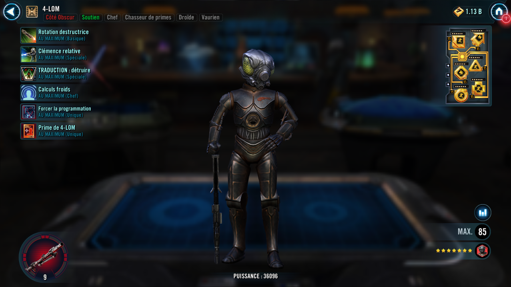
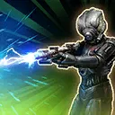
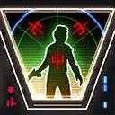
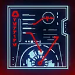

4-LOM
A former protocol droid whose logic circuits made him a cold, calculating Bounty Hunter
A former protocol droid whose logic circuits made him a cold, calculating Bounty Hunter

Deal Special damage to target enemy four times and inflict them with Defense Down for 1 turn.
During 4-LOM's turn, Dark Side Bounty Hunter Attackers Stealth for 2 turns.

Dispel buffs and deal Special damage to target enemy and Shock them for 2 turns, which can't be evaded. If target enemy was Stunned, inflict Vulnerable on all enemies for 2 turns.
Enemies with 3 stacks of Corrupted Translation are inflicted with Ability Block for 1 turn, which can't be evaded or resisted.
Call all other non-Galactic Legend Dark Side Bounty Hunter allies to assist, if they were Support, they assist again.

Dispel all debuffs on Bounty Hunter allies and they recover 30% Health and Protection.
Inflict all enemies with a stack of Corrupted Translation for 3 turns, which can't be copied, evaded, or resisted.
Corrupted Translation: Negative effects based on the cumulative number of stacks:
1+: Receive True damage whenever they deal a critical hit (this damage can't defeat this character)
2+: Whenever this character starts their turn, the enemy team gains 10% Turn Meter
3+: -30% Max Health (Galactic Legends and raid bosses: -30% Tenacity)
Bounty Hunter allies have +50% Potency and Tenacity.
Whenever a Bounty Hunter ally inflicts a debuff, they recover 5% Health. Whenever an enemy critically hits a Bounty Hunter ally, that ally recovers 10% Health and Protection.
If there are no enemy Galactic Legends: Whenever an enemy gains bonus Turn Meter, Bounty Hunter allies gain 10% Offense and Potency (max 80%), and 5 Speed (max 40) until the end of each encounter.
When 4-LOM is in the Leader slot, and not the ally slot, the following Contract is active:
Contract: Deal damage with an attack to enemies with Corrupted Translation 20 times. Enemies must be debuffed with Corrupted Translation before the start of an attack to count progress. (Only Bounty Hunter allies can contribute to the Contract)
Reward: All Bounty Hunter allies have their payouts activated, and have their cooldowns reset and gain 50% Potency until the end of battle.

4-LOM has +30% Potency. If there are no Galactic Legends at the start of battle, whenever another Bounty Hunter ally attacks out of turn, 4-LOM assists (once per turn). Whenever 4-LOM attacks an enemy with Accuracy Down, he reduces his cooldowns by 1.
At the start of battle, if Zuckuss is an ally, all non-Galactic Legend Bounty Hunter allies gain 30% Max Health and Max Protection.
Whenever an enemy with Corrupted Translation has their Turn Meter manipulated, 4-LOM gains 25% Turn Meter (once per turn). Whenever an enemy with 3 stacks of Corrupted Translation ends their turn, 4-LOM gains 50% Turn Meter.
Omicron Boost : While in Territory Battles: At the start of battle, Bounty Hunter allies gain 100% Offense and Max Health. Whenever an enemy with 3 stacks of Corrupted Translation ends their turn, 4-LOM gains an additional 50% Turn Meter.
If there were no Galactic Legend allies at the start of battle: Whenever a Bounty Hunter ally starts their turn, they gain bonus Protection (50%, stacking) for 2 turns.

Whenever 4-LOM receives Rewards from a Contract, he also gains the following Payout. (Contracts are granted by certain Bounty Hunter Leader abilities)
Payout: 4-LOM gains 100% Potency until the end of battle. Whenever 4-LOM uses TRANSLATION: Destroy, he inflicts an additional 2 stacks of Corrupted Translation for 3 turns.